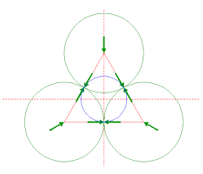

public class JarBox
{
public int numJars(int radius, int woodlength) {
int m = 1;
for (int row=2; ; row++) {
double h = 2*radius + (row-1)*Math.sqrt(3)*radius;
double w = (woodlength - 2*h) / 2;
if (w <= 0) break;
int wnum = (int)(w / (2*radius));
int tot = (w%(2*radius) >= radius) ? wnum * row : wnum*((row-1)/2+1) + (wnum-1)*(row/2);
m = Math.max(m,tot);
}
return m;
}
}
Explanation
row=2부터 육각 모양(hexagonal pattern)으로 나무조각이 쌓이므로 서로 다른 줄에 있는 나무조각들이 끼였을 때의 값을 계산해야 한다.
밑의 그림처럼 원들이 접한 부분을 이으면 정삼각형을 이룬다. 피타고라스 정리를 통해 이 정삼각형의 높이를 구해야 한다.

정삼각형 높이 = √(4r2 - r2) = √(3r2)= √3 * r
row가 증가할 때마다 높이를 더해나가면 된다. 식은 (row-1) * (√3 * r)이다.
row를 구할 수 있으면 width는 자동으로 나온다.
width를 지름(2*r)으로 나누면 한 줄에 들어갈 수 있는 원의 개수가 나온다.
원의 개수는 밑의 그림과 같이 나뉠 수 있다.
width%(radius*2) 했을 때 남은 길이가 radius와 같거나 크다면 (1)과 같이 한 개의 원을 더 넣을 수 있다는 뜻이다. 아니면 (2)로 계산한다.
(1)
(2)
모든 홀수번째 row와 모든 짝수번째 row의 원의 개수를 더하면 해당 box의 총 원의 개수가 나온다. 이것을 m의 값과 비교해서 크면 m값으로 대입한다.
References